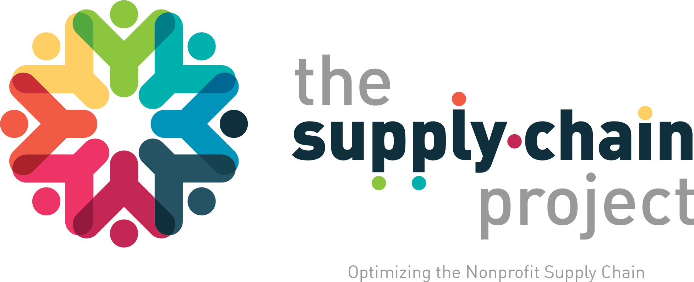

Our mission is to provide nonprofits with access to the resources, technology, and support they need to streamline their supply chain operations and maximize their impact.
We are committed to driving meaningful and lasting change in the non-profit sector
Nonprofit organizations are essential to communities worldwide, but their lack of resources can often limit them.
GET STARTEDA world where every available resource reaches the people and places that need it most.
More capacity. Better outcomes.
Less waste. More readiness.
Better for people. Better for the planet.
We connect good to good—at the speed of need.
To orchestrate the movement of surplus and underutilized resources to strengthen communities, reduce waste, and create measurable impact.
Make hidden resources visible.
Understand needs and capacity.
Intelligently connect supply to need.
Move resources efficiently.
Prove impact and drive improvement.
Right resource. Right place. Right time. Right impact.
End-to-end capabilities that turn availability into impact.
Surface hidden supply and waste.
Understand local need and partner readiness.
Intelligently pair resources with capacity.
Coordinate logistics, partners, and compliance.
Apply human judgment, ethics, and AI.
Track outcomes and improve continuously.
People + Technology + Partners + Purpose = Measurable Impact
The pillars that power our operating model.
These enablers work together as an integrated system—not as sequential steps—to create measurable impact for people, communities, and the planet.
These enablers operate in concert, continuously reinforcing one another.
People and communities remain at the center of every decision and action.
Ethics, equity, transparency, and trust guide how we operate.
Integrated enablers create exponential impact—not isolated activity.
reliable transportation is extremely important
We are seeking Logistics Service Providers to join our network and help transport goods for non-profits. We're seeking an 'all hands on' approach from the logistics industry to provide our non-profits support and advice on logistics issues.

significant impact on NGOs outcomes
We help non-profit organizations to improve their processes. Our objective is that they acquire the best practices of the industry. We provide them with technology, advice and training.

bridge between business strategy
Our marketplace aims to bring together innovative technology providers and the full spectrum of product and service organizations in food systems and health care products and supplies to develop new metrics.
encourages innovation and flexibility
A supply and demand matching system where a food-insecure family or a vulnerable elderly person without any resources or mobility can indicate their needs for healthy food or basic medical supplies.
Discover a whole new approach to connecting industry professionals, logistics providers and distribution software providers with the most at-risk non-profits that need the capability to rely on their supply chain.
MARKETPLACE NEWSBuild strategic relationships with marketplace participants.
Improve your processes to increase your impact
Please select an interest below and fill in your information once you've created an account.